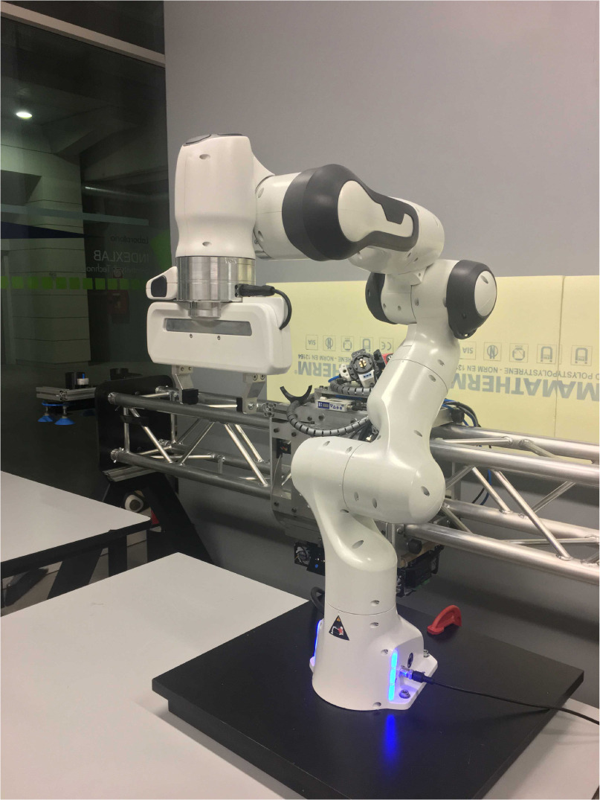
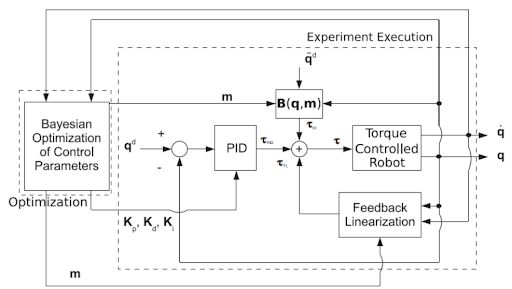
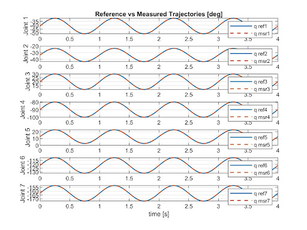
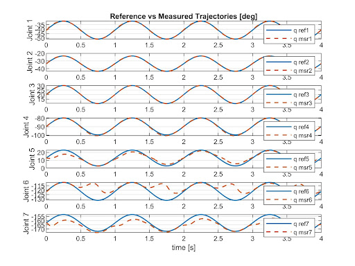

This project explored the application of Bayesian Optimization to automate the tuning of PID control parameters for a multi-joint robotic system. The goal was to optimize trajectory tracking performance while ensuring stability, motion smoothness, and compliance with hardware torque limits.

I successfully implemented a sophisticated two-phase Bayesian Optimization strategy that proved significantly more efficient than a standard single-phase expected-improvement approach. Initially, the system broadly explored the parameter space using the Lower Confidence Bound (LCB) acquisition function, before seamlessly transitioning to focused exploitation using Expected Improvement Plus (EI+).
The tuning process was divided into two distinct stages: first estimating the mass parameters in open-loop conditions by minimizing acceleration tracking errors, followed by a closed-loop PID tuning phase. I also designed a comprehensive cost function to penalize tracking errors across all joints while ensuring smooth actuation effort without violating strict motor torque saturation constraints.

